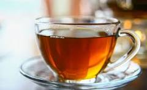

homepage
TEA
Histroy of tea
- Tea originated in China and became popular in India during British rule.
- The British East India Company started large tea plantations in Assam and Darjeeling.
- Today, tea is a daily beverage for most Indians.

Ingredients:
- Water
- Mil
- Tea powder or tea leaves
- Sugar
- Optional: Ginger, cardamom, or masala
Procedure:
- Boil water in a pan.
- Add tea leaves and boil for 2–3 minutes.
- Add milk and sugar as per taste.
- (Optional) Add crushed ginger or cardamom for flavor.
- Boil again, then strain the tea.
- Serve hot in cups.